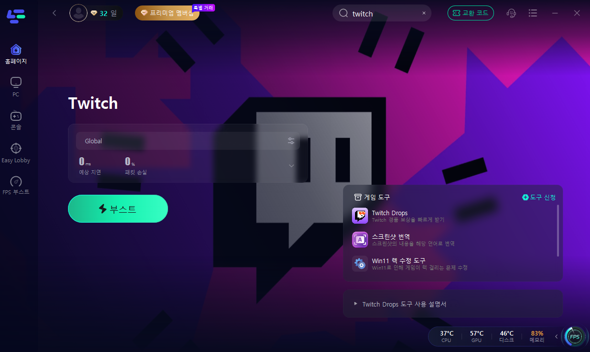
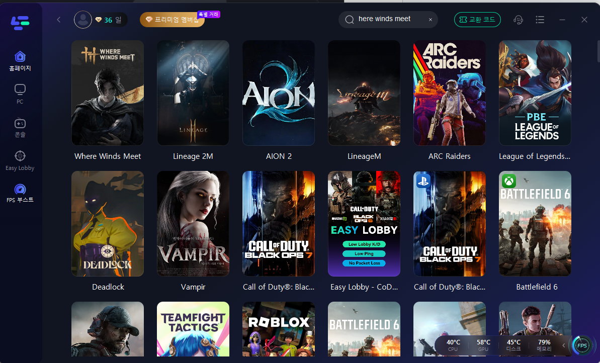
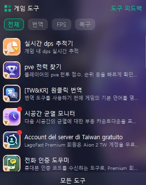
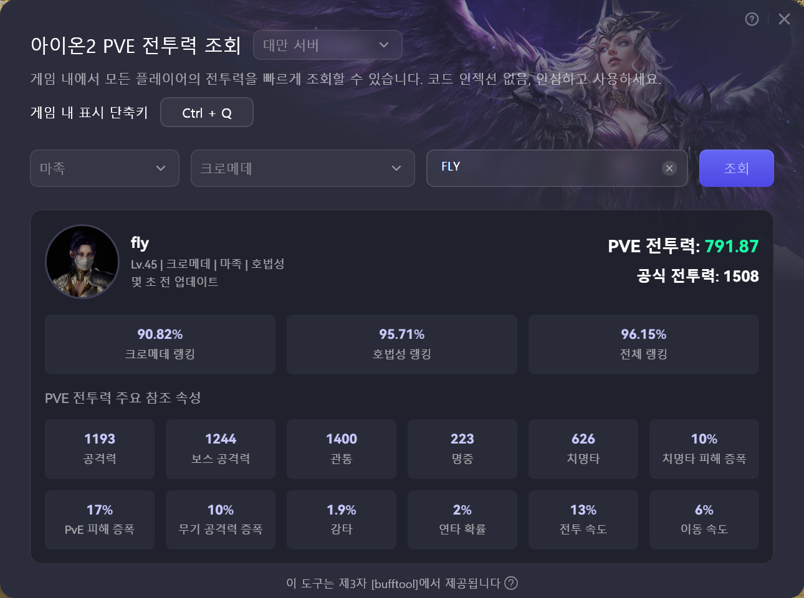
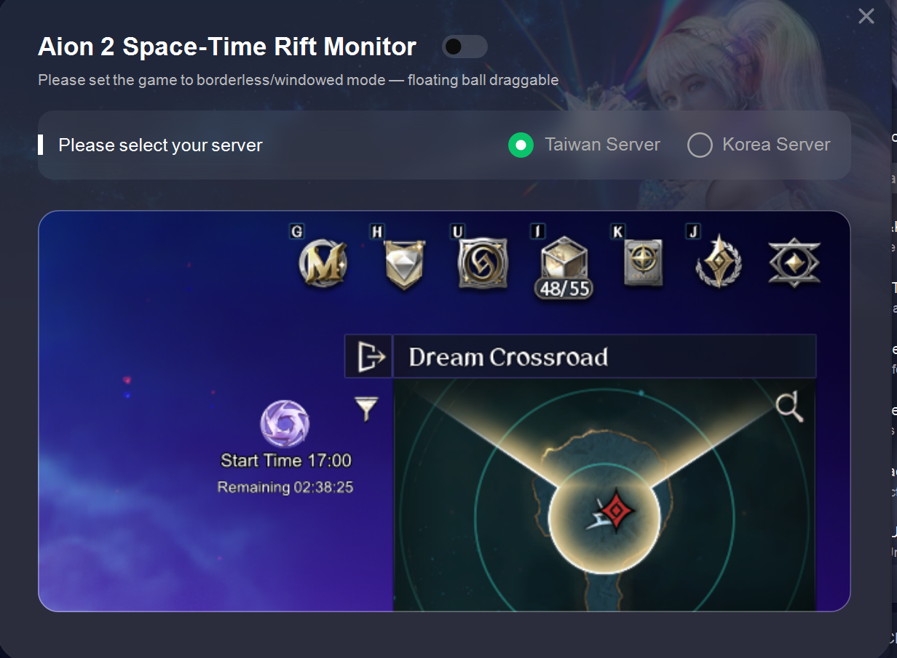
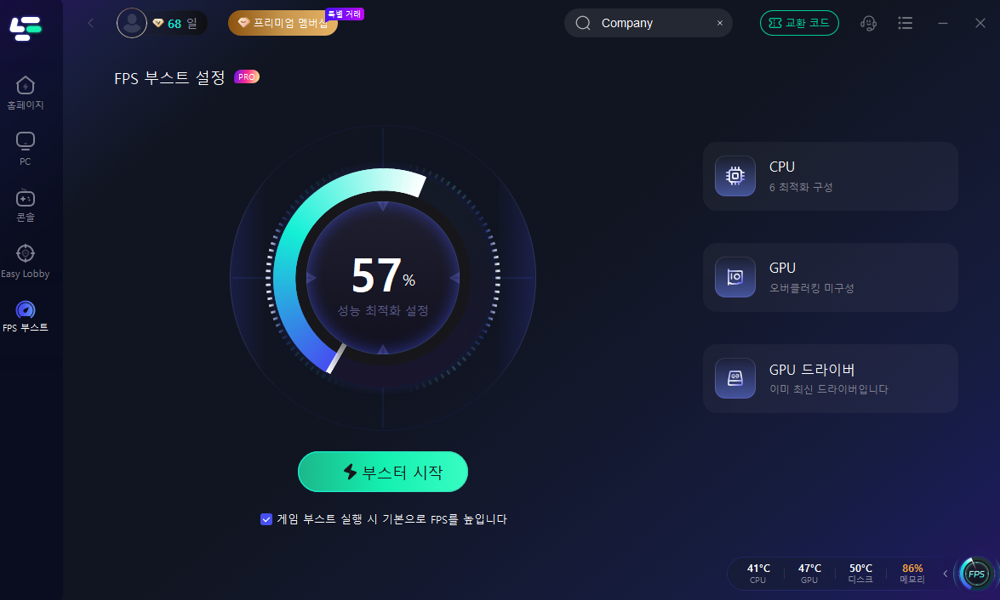
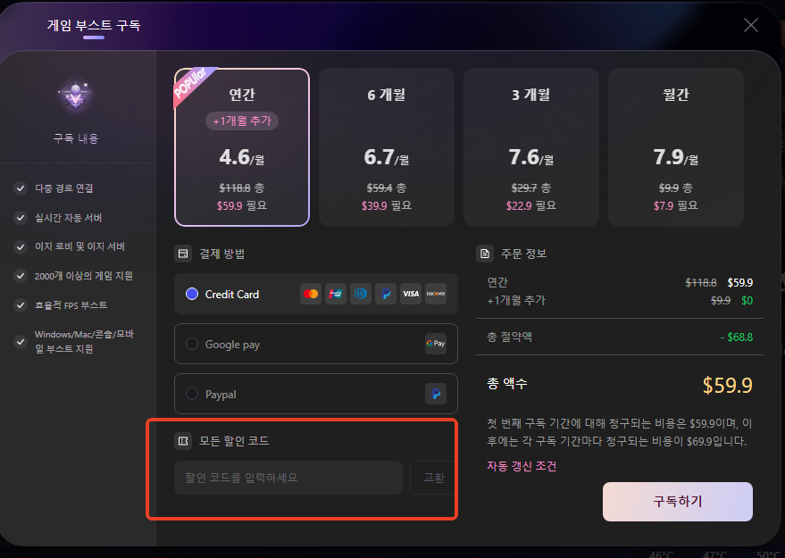

아이온2 7월 1일 대규모 업데이트! 꼭 챙겨야 할 DPS·프레임·렉 체크리스트 (라고패스트 활용법)
드디어 기다리던 소식이 떴네요. 아이온2가 7월 1일에 첫 대규모 업데이트를 시작해요. 그동안 짧은 시즌제로 돌아가던 걸 벗고, 이번엔 통 큰 '챕터' 단위로 콘텐츠를 푸는 첫 패치라서 유저분들 기대가 상당하더라고요. 챕터 이름은 '모래와 서리의 땅'이고요. 그래서 오늘은 이번 업데이트가 뭐가 바뀌는지부터 쭉 정리하고, 새 콘텐츠를 더 쾌적하게 즐기려고 제가 요즘 챙겨 쓰는 DPS·프레임·렉 체크리스트까지 같이 풀어볼게요.
7월 1일 아이온2, 뭐가 바뀌나요?
먼저 업데이트 핵심부터 짚을게요. 이번 챕터1의 간판은 단연 신규 클래스 '권성'이에요. 주먹과 발로 치고 빠지는 근접 직업인데, '분노' 자원을 모아 최대치가 되면 폭주 상태로 들어가서 몰아치는 스타일이라고 하네요. 신규 육성만 지원하고 직업 변경권은 안 준다니, 권성으로 갈 분들은 새로 키우셔야 해요. 여기에 맞춰 검성·수호성 같은 기존 근접 직업엔 '헤드 어택' 시스템이 들어가서 밸런스도 손봅니다.
볼륨도 확 커졌어요. 신규 지역으로 천족 사막 '엘테넨'과 마족 화산지대 '모르헤임'이 열리고, 원정 던전 '타락한 데바의 성', 초월 던전 '노이란의 숨겨진 유산'도 추가돼요. PvP 쪽은 100인 배틀로얄 '아웃랜드', 전투력·스킬을 동일화한 '전장: 점령전', 그리고 '시공의 균열: 쟁탈전'까지 들어옵니다. 성장 상한도 풀려서 최고 레벨이 45 → 50으로 오르고, 파티 인원도 4인에서 5인으로 늘어나네요.
지갑 사정에 직결되는 멤버십도 개편됐는데요. 기존에 여러 종으로 나뉘어 최대 4만 9800원까지 가던 유료 멤버십을 '콰이링 멤버십' 한 종으로 합치고 2만 5000원으로 내렸어요. 기간도 28일에서 보상 2일을 더해 30일로 늘었고요. 정리하면 이렇습니다.
| 항목 | 7월 1일 챕터1 업데이트 |
|---|---|
| 챕터명 | 모래와 서리의 땅 (첫 대규모 챕터 패치) |
| 신규 클래스 | 권성 (근접 · '분노' 폭주, 신규 육성만) |
| 신규 지역 | 엘테넨(천족 사막) · 모르헤임(마족 화산) |
| 신규 던전 | 원정 '타락한 데바의 성' · 초월 '노이란의 숨겨진 유산' |
| PvP | 아웃랜드(100인 배틀로얄) · 전장: 점령전 · 시공의 균열: 쟁탈전 |
| 성장 | 최고 레벨 45→50 · 파티 4인→5인 · 공격력 상한 폐지 |
| 멤버십 | 콰이링 1종 통합 · 2만 5000원 · 30일 |
레벨 상한이 열리고 신규 던전·대규모 PvP가 한꺼번에 들어오면, 자연히 전투가 더 빡세지고 트래픽도 몰리게 돼요. 딜 경쟁이 빡센 던전일수록 "내 딜이 제대로 나오고 있나", "프레임은 안 끊기나", "결정적인 순간에 렉은 안 걸리나"가 체감되거든요. 그래서 새 콘텐츠 들어가기 전에 한 번 점검하면 좋은 세 가지 체크리스트를 정리해 봤어요.
그래서 DPS·프레임·렉, 한 번에 챙겨봤어요
제가 요즘 쓰는 건 라고패스트(LagoFast)라는 프로그램이에요. 원래는 게임 부스터로 알려진 툴인데요. 전용 트래픽 경로로 게임 데이터를 우회시켜서 핑·지연·패킷 손실을 줄여주는 게 기본 역할이네요. VPN이랑 헷갈리기 쉬운데, IP를 바꾸거나 트래픽을 통째로 암호화하는 방식이 아니라 게임 연결만 다듬는 쪽이라 결이 조금 달라요. 사실대로 말하면 부스터가 내 캐릭터 공격력을 직접 올려주는 마법은 아니고, '연결과 환경을 정리해서 제 실력이 그대로 나오게 해주는' 도구라고 보시는 게 정확해요.

라고패스트 메인 화면이에요. 게임을 골라 '부스트'를 누르면 연결을 다듬어 주는 구조랍니다

라고패스트가 지원하는 게임 목록이에요. 2000개 넘는 게임을 지원하고, 아이온2(AION 2)도 들어가 있어요
그런데 요즘 라고패스트가 단순 부스터를 넘어서, 아이온2 플레이에 바로 쓰는 게임 도구들을 꽤 붙여놨더라고요. 위에서 말한 DPS·프레임·렉을 챙기는 도구가 한 프로그램 안에 다 들어 있어서, 협찬을 떠나서도 제가 실제로 켜두고 쓰고 있어요. 하나씩 볼게요.
내 딜은 제대로 나오고 있을까? DPS 통계 도구
가장 눈에 띈 건 DPS 통계 도구(현재 V2.5.4)예요. 이름 그대로 전투 중 내 DPS(초당 딜)를 실시간으로 보여주는 측정 도구인데요. 딜량을 올려주는 게 아니라, 내 딜이 지금 얼마나 나오는지 눈으로 확인시켜 주는 도구라는 점이 핵심이에요. 던전에서 내 딜이 부족한지, 어떤 스킬 사이클이 셌는지, 장비를 바꾸니 실제로 딜이 늘었는지를 숫자로 확인할 수 있으니까 직업 이해도 올리고 장비 세팅 다듬는 데 확실히 도움이 돼요.

라고패스트 안의 게임 도구 목록이에요. 맨 위 '실시간 dps 추적기'가 이번에 소개할 DPS 도구랍니다
라고패스트 측 설명으로는, 이 도구의 장점을 이렇게 정리하더라고요. 무료 DPS 툴과 비교해서 참고하시라고 옮겨볼게요.
| 구분 | 라고패스트 DPS 도구가 내세우는 점 |
|---|---|
| 안정성 | 상용 서비스라 게임 업데이트에 즉각 대응 · 지속 관리 |
| 파티 통계 | 파티원 실시간 딜 순위 + 스킬별·소환수('펫')·신석·DoT까지 구분 |
| 측정 방식 | 게임에 끼어들지 않고 바깥에서 지켜보는 방식이라 오차율 1% 미만이라고 설명 |
| 편의성 | 핑 저감과 DPS 확인을 한 프로그램에서 (올인원) |
실제로 써보니 출력 그래프로 파티원과 딜 추이를 비교하거나, 전투 결과를 원클릭 스크린샷으로 저장해 공유하는 게 편하긴 하더라고요. 마우스를 올리면 스킬별 피해량, 클릭하면 치명타율·명중률·스킬 점유율 같은 상세 수치까지 보여줘서 복기하기에 좋았어요. 참고로 도구를 먼저 켠 다음에 게임이나 파티에 입장해야 파티원 정보가 제대로 잡힌다고 하니 순서만 기억해 두세요.
내 전력은 어느 정도일까? PVE 전투력 조회랑 시공의 균열 타이머
딜을 봤으면 이제 내 전력 수준도 궁금하잖아요. 라고패스트엔 AION2 PVE 전투력 조회 도구가 있어서, 인게임에서 내 PVE 전투 점수랑 직업 순위, 서버·전체 순위를 빠르게 확인할 수 있어요. 주변 플레이어 닉네임을 클릭하면 자동으로 조회까지 입력돼서, 이름 복잡한 유저 정보도 쉽게 볼 수 있더라고요.

아이온2 PVE 전투력 조회 화면이에요. 내 전투 점수랑 순위, 세부 능력치를 한눈에 볼 수 있어요
그리고 이번 업데이트로 들어오는 '시공의 균열'은 메인 퀘스트 진행에 꼭 들러야 하는 곳인데, 3시간마다 리셋돼 하루 8번 열리고 활성화되면 10분 동안만 유효한 데다 최대 400명까지만 들어갈 수 있어서 타이밍 잡기가 은근 빡세요. 라고패스트의 시공의 균열 타이머는 다음 균열까지 카운트다운을 띄워줘서 자리 놓치는 일을 줄여주더라고요. 게임을 창모드(무테 모드)로 두면 화면 위에 플로팅 볼로 떠요.

시공의 균열 타이머예요. 다음 균열까지 남은 시간을 띄워줘서 타이밍 챙기기 편하더라고요
화면이 끊긴다면? 프레임이랑 렉 잡아주는 도구들
마지막은 프레임(FPS)과 렉이에요. 새 지역·대규모 PvP가 들어오면 화면이 끊기거나 버벅이는 순간이 늘기 마련인데요. 라고패스트의 FPS 부스트는 CPU·GPU 설정을 게임에 맞게 정리해서 프레임을 끌어올려주는 기능이에요. 부스터 시작을 누르면 성능 최적화 상태를 퍼센트로 보여주고, 게임 실행 시 자동으로 적용되게 해둘 수도 있어요.

FPS 부스트 설정 화면이에요. CPU·GPU를 정리해서 프레임을 챙겨준답니다
여기에 게임 환경 복구 도구도 쏠쏠해요. 게임이 갑자기 'DLL 누락'이나 0xc000007b 같은 오류로 안 켜질 때, DirectX·C++ 런타임·.NET 같은 구성요소를 원클릭으로 점검·복구해주거든요. 마우스 위치가 클릭 지점과 안 맞는 문제, 서버 오픈 초기 대기열 자동 진입 같은 자잘한 수정 도구들도 들어 있어서, 렉이나 오류로 스트레스받던 분들한테는 꽤 든든하더라고요.
글로벌 출시 앞두고 챙겨두면 좋은 점
한 가지 더요. 아이온2가 2026년 하반기(9월 예정) 스팀·퍼플로 글로벌 출시를 앞두고 있잖아요. 라고패스트는 이 글로벌 출시에 맞춰 서버 간 이동이 가능한 스팀 계정을 무료로 제공하고, 가속 연결 시 핑 수치를 낮춰주는 기능도 지원할 예정이라고 해요. 해외 서버로 넘어가서 다른 나라 유저랑 같이 플레이하고 싶은 분들은 미리 알아두면 좋겠더라고요. 참고로 일부 유저분들이 "라고패스트 켜니 오히려 지연이 높아진다"고 피드백을 줘서, 게임 연결에 영향을 안 주는 'No Game Boost' 노드도 새로 추가됐다고 하니 상황 보고 골라 쓰시면 돼요.
다운로드 & 전용 할인코드
여기까지 보고 한 번 써보고 싶으시면, 아래 링크로 라고패스트를 받아서 무료로 체험해 보실 수 있어요. 봄딩 블로그 전용 할인코드도 같이 챙겨드릴게요.

구독 화면 아래쪽 '할인 코드' 칸에 코드를 입력하면 할인이 적용돼요
※ 위 다운로드 링크와 할인코드는 라고패스트에서 별도로 전달받는 대로 넣을 예정이에요. 그전까진 버튼·코드가 자리표시 상태라 눌러도 동작하지 않는 점 참고해 주세요.
아이온2 챕터1, 한 줄로 정리해 볼게요
정리하면, 7월 1일 아이온2 챕터1 '모래와 서리의 땅'은 신규 클래스 권성에 신규 지역·던전·PvP까지 통으로 들어오는 큰 업데이트예요. 새 콘텐츠를 더 쾌적하게 즐기고 싶다면 들어가기 전에 DPS(내 딜) → 전력·타이머 → 프레임·렉 순서로 한 번 점검해 보시길 권해요. 라고패스트는 이 세 가지를 한 프로그램에서 챙길 수 있어서 제가 요즘 곁에 두고 쓰고 있고요. 다만 DPS 같은 서드파티 도구는 운영정책을 확인하고 본인 판단으로 쓰시는 걸 잊지 마세요. 그럼 다들 7월 1일 업데이트 즐겁게 즐기시길 바랄게요!